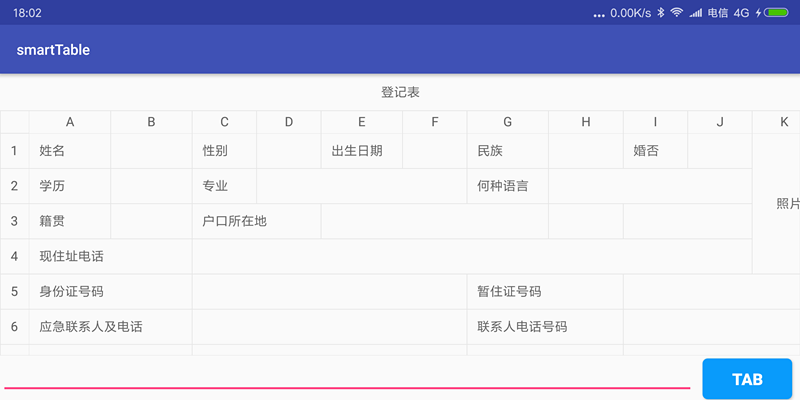
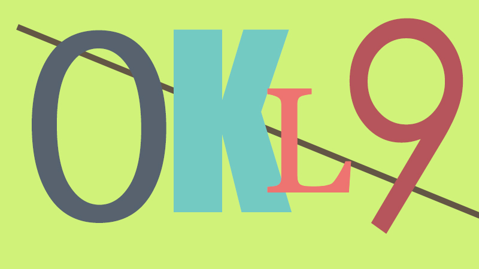
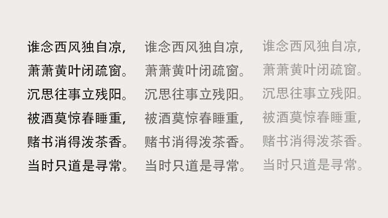
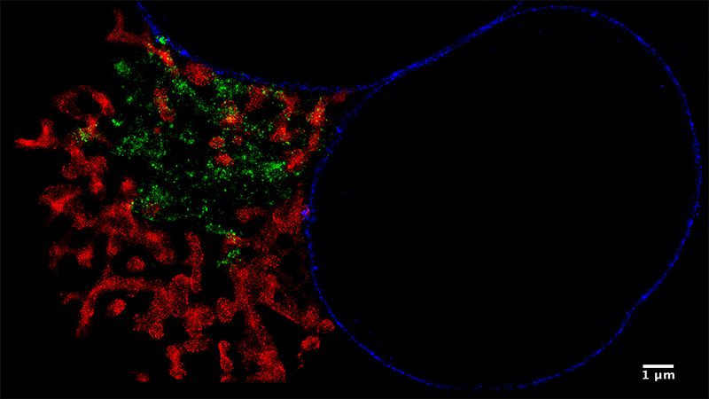

-
网络图片文本识别
- 使用ctpn定位图片中文本框，设计attention-ctc多任务学习模型，识别网络图片中的文本
- CV DL Py
-
验证码识别
- 使用改进的CRNN对数字，字母与汉字的验证码识别
- CV DL Py
-
网络图片文本识别
- 使用传统图像算法，获取文字区域，通过文字特征预分割字符，并使用深度搜索和MLP进行文本的分割和识别
- CV C#
-
荧光超分辨率显微镜校准
- 使用改进的NCC模板匹配等算法，对显微镜所拍摄图像进行亚像素级偏移计算，并控制压电板与显微镜，不断矫正样本位置，使最终成像精度增加
- CV C++